Agriculture
CAPa Métiers de l'agriculture. Sixteen English words of the trade: tools, objects and everyday gestures. Open to everyone.
Four steps: from French to English, listen and choose, match, and complete a sentence at work. The Listen button reads the word in British English.
Word list
| Image | Français | English | Audio |
|---|---|---|---|
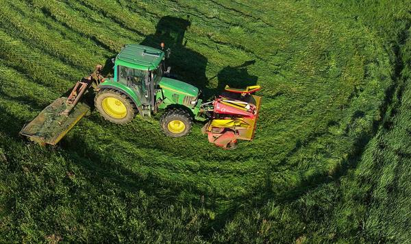 | le tracteur | tractor | |
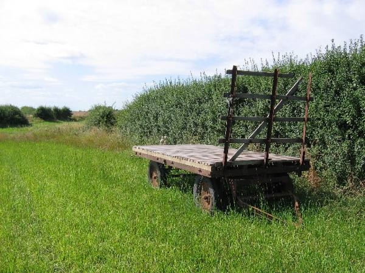 | la remorque | trailer | |
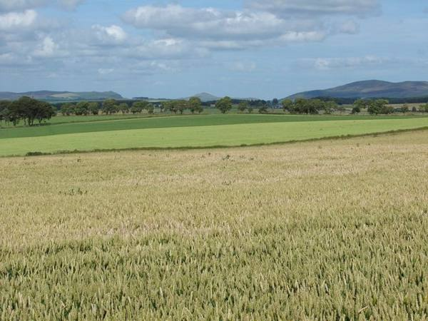 | le champ | field | |
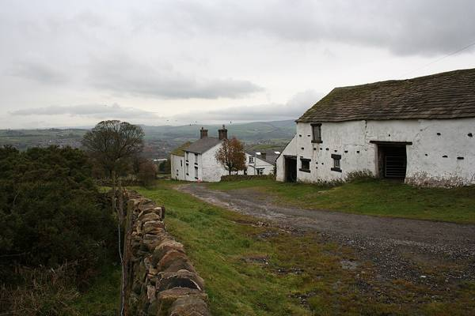 | la grange | barn | |
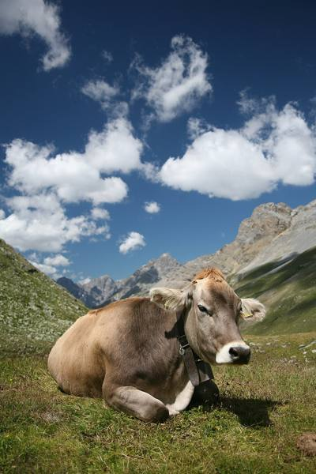 | la vache | cow | |
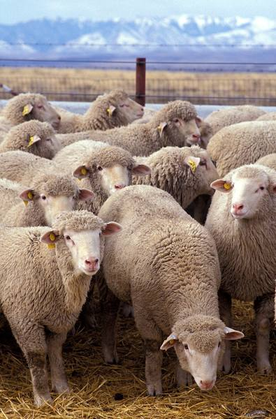 | le mouton | sheep | |
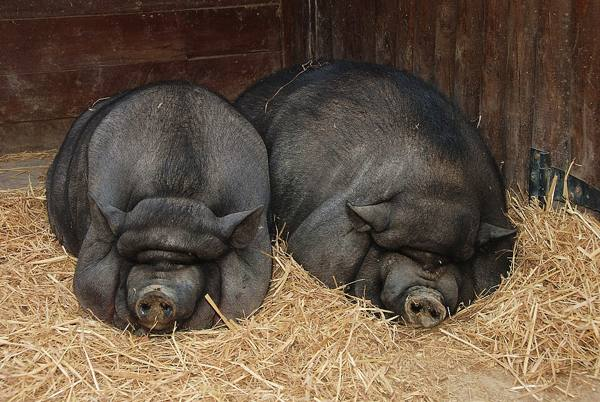 | le cochon | pig | |
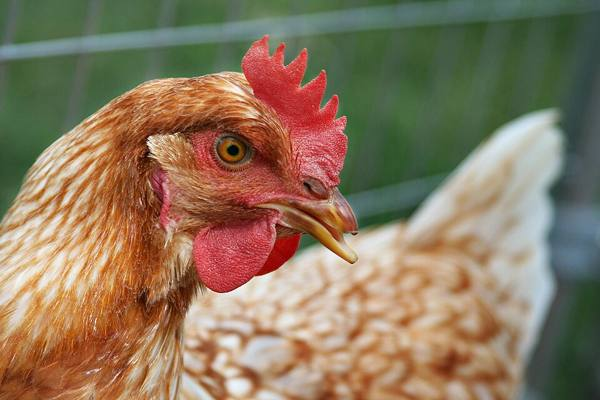 | la poule | hen | |
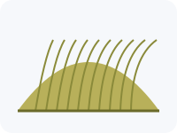 | le foin | hay | |
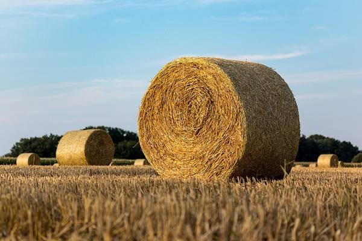 | la paille | straw | |
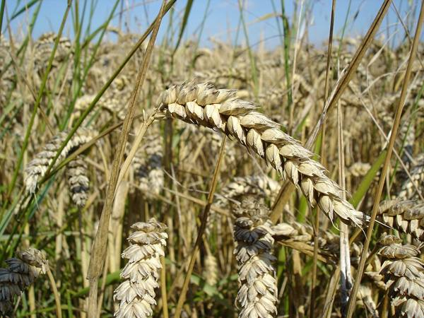 | le blé | wheat | |
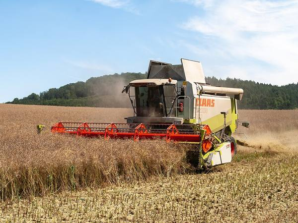 | la moissonneuse-batteuse | combine harvester | |
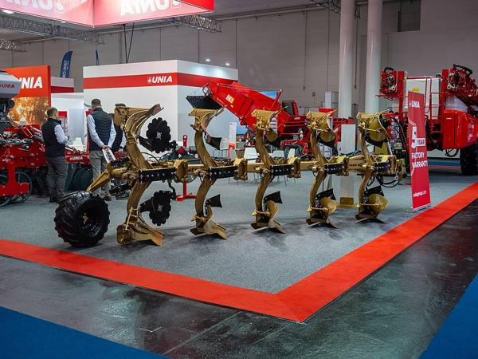 | la charrue | plough | |
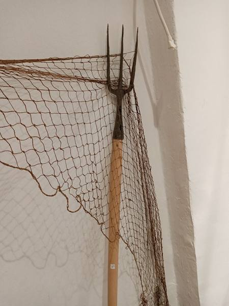 | la fourche | pitchfork | |
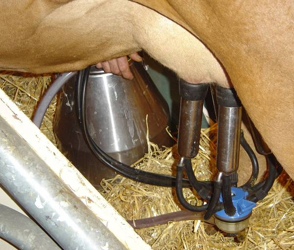 | la machine à traire | milking machine | |
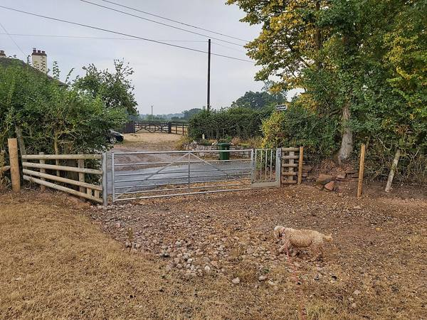 | la barrière | gate |
Teacher key: sentences at work
- Drive the ________ to the field. (tractor)
- Milk the cows with the ________. (milking machine)
- Close the ________: the sheep can escape. (gate)
- Put the hay in the ________. (barn)
- The ________ lays an egg every day. (hen)
- We harvest the ________ in July. (wheat)
In steps 1, 2 and 3, the right answer is the line in the word list.
Image credits
Photos under an open licence, from Wikimedia Commons, resized for the phone. Original drawings for gestures and ideas.
- le tracteur (tractor) : photo by Petar Milošević, licence CC BY-SA 4.0, file page on Wikimedia Commons.
- la remorque (trailer) : photo by Stephen Horncastle, licence CC BY-SA 2.0, file page on Wikimedia Commons.
- le champ (field) : photo by David Hamilton, licence CC BY-SA 2.0, file page on Wikimedia Commons.
- la grange (barn) : photo by Dave.Dunford, licence CC BY-SA 4.0, file page on Wikimedia Commons.
- la vache (cow) : photo by Daniel Schwen, licence CC BY-SA 3.0, file page on Wikimedia Commons.
- le mouton (sheep) : photo by Keith Weller, licence Public domain, file page on Wikimedia Commons.
- le cochon (pig) : photo by Alvesgaspar, licence CC BY-SA 4.0, file page on Wikimedia Commons.
- la poule (hen) : photo by Thegreenj, licence CC BY-SA 3.0, file page on Wikimedia Commons.
- le foin (hay) : original drawing, Itinéraires et destinations, CC BY-NC-SA 4.0.
- la paille (straw) : photo by Dietmar Rabich, licence CC BY-SA 4.0, file page on Wikimedia Commons.
- le blé (wheat) : photo by Bluemoose, licence CC BY-SA 3.0, file page on Wikimedia Commons.
- la moissonneuse-batteuse (combine harvester) : photo by Ermell, licence CC BY-SA 4.0, file page on Wikimedia Commons.
- la charrue (plough) : photo by MB-one, licence CC BY-SA 4.0, file page on Wikimedia Commons.
- la fourche (pitchfork) : photo by Aleksandra Đuričić, licence CC BY-SA 4.0, file page on Wikimedia Commons.
- la machine à traire (milking machine) : photo by David Monniaux, licence CC BY-SA 2.0 fr, file page on Wikimedia Commons.
- la barrière (gate) : photo by John P Reeves, licence CC BY-SA 2.0, file page on Wikimedia Commons.
Vocabulary sheet to print
Large type (16 point minimum), in three formats: